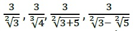
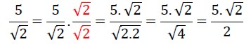
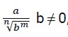
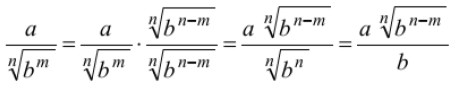
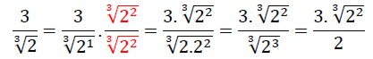
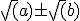
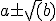
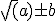
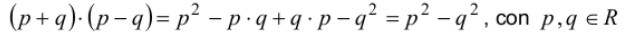
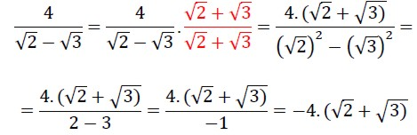

Racionalización de denominadores
A veces, cuando se resuelven cálculos o problemas se obtienen fracciones con números irracionales en los denominadores, como por ejemplo:
 Para transformar estas fracciones en otras equivalentes, pero con denominadores racionales, se usa un procedimiento llamado racionalización.
A continuación, se recordarán algunas reglas para racionalizar denominadores. Aunque actualmente se utiliza cada vez menos estos procedimientos debido a que se cuenta con calculadoras y computadoras que facilitan los cálculos, es importante conocerlos para sostener la propia autonomía.
Se considerarán los siguientes casos:
- El denominador es un radical único irreducible de índice 2.
Se multiplican numerador y denominador de la fracción por el mismo radical del denominador.
Ejemplo:

- El denominador es un radical único irreducible de índice distinto de 2.
En general, para racionalizar una fracción de la forma:
 se procede como sigue: 
Ejemplo:

- El denominador es un binomio de la forma  o  o 
Para comprender el procedimiento a usar en este caso, se debe tener en cuenta que

Ejemplo:


En estos videos podrás ver ejemplos de cómo racionalizar denominadores con radicales:
Link - Video N° 1
Link - Video N° 2
Link - Video N° 3
Obra publicada con Licencia Creative Commons Reconocimiento Compartir igual 4.0